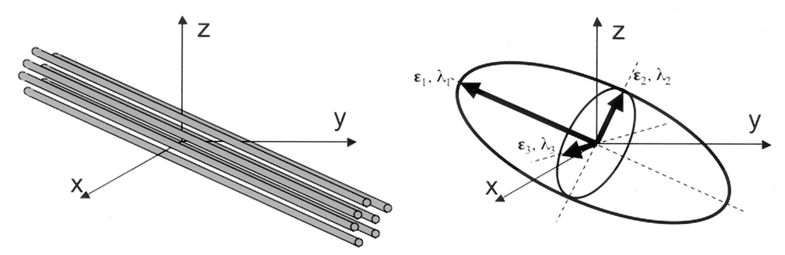
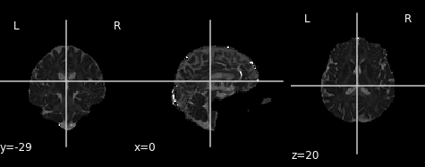
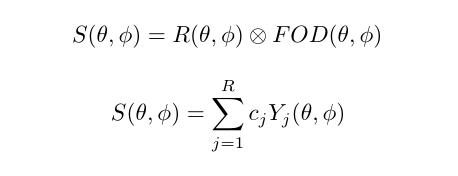
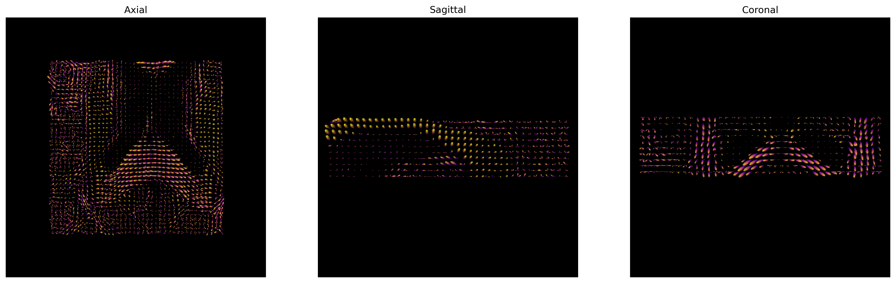
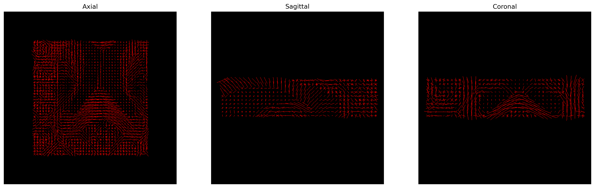
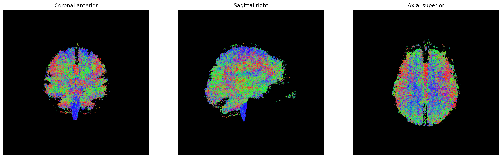

Content from Introduction to Diffusion MRI data
Last updated on 2024-02-29 | Edit this page
Estimated time: 25 minutes
Overview
Questions
- How is dMRI data represented?
- What is diffusion weighting?
Objectives
- Representation of diffusion data and associated gradients
- Learn about diffusion gradients
Diffusion Weighted Imaging (DWI)
Diffusion MRI is a popular technique to study the brain’s white matter. To do so, MRI sequences which are sensitive to the random, microscropic motion (i.e. diffusion) of water protons are used. The diffusion of water within biological structures, such as the brain, are often restricted due to barriers (e.g. cell membranes), resulting in a preferred direction of diffusion (anisotropy). A typical diffusion MRI scan will acquire multiple volumes with varying magnetic fields (i.e. diffusion gradients) which are sensitive to diffusion along a particular direction and result in diffusion-weighted images (DWI). Water diffusion that is occurring along the same direction as the diffusion gradient results in an attenuated signal. Images with no diffusion weighting (i.e. no diffusion gradient) are also acquired as part of the acquisition protocol. With further processing (to be discussed later in the lesson), the acquired images can provide measurements which are related to the microscopic properties of brain tissue. DWI has been used extensively to diagnose stroke, assess white matter damage in many different kinds of diseases, provide insights into the white matter connectivity, and much more!

Diffusion along X, Y, and Z directions. The signal in the left/right
oriented corpus callosum is lowest when measured along X, while the
signal in the inferior/superior oriented corticospinal tract is lowest
when measured along Z.
b-values & b-vectors
In addition to the acquired diffusion images, two files are collected
as part of the diffusion dataset, known as the b-vectors and b-values.
The b-value (file suffix .bval) is the
diffusion-sensitizing factor, and reflects the timing and strength of
the diffusion gradients. A larger b-value means our DWI signal will be
more sensitive to the diffusion of water. The b-vector (file suffix
.bvec) corresponds to the direction with which diffusion
was measured. Together, these two files define the diffusion MRI
measurement as a set of gradient directions and corresponding
amplitudes, and are necessary to calculate useful measures of the
microscopic properties. The DWI acquisition process is thus:
- Pick a direction to measure diffusion along (i.e. pick the diffusion
gradient direction). This is recorded in the
.bvecfile. - Pick a strength of the magnetic gradient. This is recorded in the
.bvalfile. - Acquire the MRI with these settings to examine water diffusion along the chosen direction. This is the DWI volume.
- Thus, for every DWI volume we have an associated b-value and b-vector which tells us how we measured the diffusion.
Dataset
For the rest of this lesson, we will make use of a subset of a publicly available dataset, ds000221, originally hosted at openneuro.org. The dataset is structured according to the Brain Imaging Data Structure (BIDS). Please check the BIDS-dMRI Setup page to download the dataset.
Below is a tree diagram showing the folder structure of a single MR
subject and session within ds000221. This was obtained by using the bash
command tree.
OUTPUT
../data/ds000221
├── .bidsignore
├── CHANGES
├── dataset_description.json
├── participants.tsv
├── README
├── derivatives/
├── sub-010001/
└── sub-010002/
├── ses-01/
│ ├── anat
│ │ ├── sub-010002_ses-01_acq-lowres_FLAIR.json
│ │ ├── sub-010002_ses-01_acq-lowres_FLAIR.nii.gz
│ │ ├── sub-010002_ses-01_acq-mp2rage_defacemask.nii.gz
│ │ ├── sub-010002_ses-01_acq-mp2rage_T1map.nii.gz
│ │ ├── sub-010002_ses-01_acq-mp2rage_T1w.nii.gz
│ │ ├── sub-010002_ses-01_inv-1_mp2rage.json
│ │ ├── sub-010002_ses-01_inv-1_mp2rage.nii.gz
│ │ ├── sub-010002_ses-01_inv-2_mp2rage.json
│ │ ├── sub-010002_ses-01_inv-2_mp2rage.nii.gz
│ │ ├── sub-010002_ses-01_T2w.json
│ │ └── sub-010002_ses-01_T2w.nii.gz
│ ├── dwi
│ │ ├── sub-010002_ses-01_dwi.bval
│ │ │── sub-010002_ses-01_dwi.bvec
│ │ │── sub-010002_ses-01_dwi.json
│ │ └── sub-010002_ses-01_dwi.nii.gz
│ ├── fmap
│ │ ├── sub-010002_ses-01_acq-GEfmap_run-01_magnitude1.json
│ │ ├── sub-010002_ses-01_acq-GEfmap_run-01_magnitude1.nii.gz
│ │ ├── sub-010002_ses-01_acq-GEfmap_run-01_magnitude2.json
│ │ ├── sub-010002_ses-01_acq-GEfmap_run-01_magnitude2.nii.gz
│ │ ├── sub-010002_ses-01_acq-GEfmap_run-01_phasediff.json
│ │ ├── sub-010002_ses-01_acq-GEfmap_run-01_phasediff.nii.gz
│ │ ├── sub-010002_ses-01_acq-SEfmapBOLDpost_dir-AP_epi.json
│ │ ├── sub-010002_ses-01_acq-SEfmapBOLDpost_dir-AP_epi.nii.gz
│ │ ├── sub-010002_ses-01_acq-SEfmapBOLDpost_dir-PA_epi.json
│ │ ├── sub-010002_ses-01_acq-SEfmapBOLDpost_dir-PA_epi.nii.gz
│ │ ├── sub-010002_ses-01_acq-sefmapBOLDpre_dir-AP_epi.json
│ │ ├── sub-010002_ses-01_acq-sefmapBOLDpre_dir-AP_epi.nii.gz
│ │ ├── sub-010002_ses-01_acq-sefmapBOLDpre_dir-PA_epi.json
│ │ ├── sub-010002_ses-01_acq-sefmapBOLDpre_dir-PA_epi.nii.gz
│ │ ├── sub-010002_ses-01_acq-SEfmapBOLDpost_dir-AP_epi.json
│ │ ├── sub-010002_ses-01_acq-SEfmapBOLDpost_dir-AP_epi.nii.gz
│ │ ├── sub-010002_ses-01_acq-SEfmapBOLDpost_dir-PA_epi.json
│ │ ├── sub-010002_ses-01_acq-SEfmapBOLDpost_dir-PA_epi.nii.gz
│ │ ├── sub-010002_ses-01_acq-SEfmapDWI_dir-AP_epi.json
│ │ ├── sub-010002_ses-01_acq-SEfmapDWI_dir-AP_epi.nii.gz
│ │ ├── sub-010002_ses-01_acq-SEfmapDWI_dir-PA_epi.json
│ │ └── sub-010002_ses-01_acq-SEfmapDWI_dir-PA_epi.nii.gz
│ └── func
│ │ ├── sub-010002_ses-01_task-rest_acq-AP_run-01_bold.json
│ │ └── sub-010002_ses-01_task-rest_acq-AP_run-01_bold.nii.gz
└── ses-02/Querying a BIDS Dataset
pybids is a
Python package for querying, summarizing and manipulating the BIDS
folder structure. We will make use of pybids to query the
necessary files.
Let’s first pull the metadata from its associated JSON file
(dictionary-like data storage) using the get_metadata()
function for the first run.
PYTHON
from bids.layout import BIDSLayout
?BIDSLayout
layout = BIDSLayout("../data/ds000221", validate=False)Now that we have a layout object, we can work with a BIDS dataset! Let’s extract the metadata from the dataset.
PYTHON
dwi = layout.get(subject='010006', suffix='dwi', extension='.nii.gz', return_type='file')[0]
layout.get_metadata(dwi)OUTPUT
{'EchoTime': 0.08,
'EffectiveEchoSpacing': 0.000390001,
'FlipAngle': 90,
'ImageType': ['ORIGINAL', 'PRIMARY', 'DIFFUSION', 'NON'],
'MagneticFieldStrength': 3,
'Manufacturer': 'Siemens',
'ManufacturersModelName': 'Verio',
'MultibandAccelerationFactor': 2,
'ParallelAcquisitionTechnique': 'GRAPPA',
'ParallelReductionFactorInPlane': 2,
'PartialFourier': '7/8',
'PhaseEncodingDirection': 'j-',
'RepetitionTime': 7,
'TotalReadoutTime': 0.04914}Diffusion Imaging in Python (DIPY)
For this lesson, we will use the DIPY (Diffusion Imaging
in Python) package for processing and analysing diffusion MRI.
Why DIPY?
- Fully free and open source.
- Implemented in Python. Easy to understand, and easy to use.
- Implementations of many state-of-the art algorithms.
- High performance. Many algorithms implemented in Cython.
Defining a measurement: GradientTable
DIPY has a built-in function that allows us to read in
bval and bvec files named
read_bvals_bvecs under the dipy.io.gradients
module. Let’s first grab the path to our gradient directions and
amplitude files and load them into memory.
Now that we have the necessary diffusion files, let’s explore the data!
PYTHON
import numpy as np
import nibabel as nib
from mpl_toolkits.mplot3d import Axes3D
import matplotlib.pyplot as plt
data = nib.load(dwi).get_fdata()
data.shapeOUTPUT
(128, 128, 88, 67)We can see that the data is 4 dimensional. The 4th dimension represents the different diffusion directions we are sensitive to. Next, let’s take a look at a slice.
PYTHON
x_slice = data[58, :, :, 0]
y_slice = data[:, 58, :, 0]
z_slice = data[:, :, 30, 0]
slices = [x_slice, y_slice, z_slice]
fig, axes = plt.subplots(1, len(slices))
for i, _slice in enumerate(slices):
axes[i].imshow(_slice.T, cmap="gray", origin="lower")We can also see how the diffusion gradients are represented. This is plotted on a sphere, the further away from the center of the sphere, the stronger the diffusion gradient (increased sensitivity to diffusion).
PYTHON
bvec_txt = np.genfromtxt(bvec)
fig = plt.figure()
ax = fig.add_subplot(111, projection='3d')
ax.scatter(bvec_txt[0], bvec_txt[1], bvec_txt[2])
plt.show()The files associated with the diffusion gradients need to converted
to a GradientTable object to be used with
DIPY. A GradientTable object can be
implemented using the dipy.core.gradients module. The input
to the GradientTable should be our the values for our
gradient directions and amplitudes we read in.
PYTHON
from dipy.io.gradients import read_bvals_bvecs
from dipy.core.gradients import gradient_table
gt_bvals, gt_bvecs = read_bvals_bvecs(bval, bvec)
gtab = gradient_table(gt_bvals, gt_bvecs)We will need this gradient table later on to process and model our data!
There is also a built-in function for gradient tables,
b0s_mask that can be used to separate diffusion weighted
measurements from non-diffusion weighted measurements (\(b = 0 s/mm^2\), commonly referred to as the
B0 volume or image). It is important to know where our diffusion
weighted free measurements are as we need them for registration in our
preprocessing (our next notebook). gtab.b0s_mask shows that
this is our first volume of our dataset.
OUTPUT
array([ True, False, False, False, False, False, False, False, False,
False, False, True, False, False, False, False, False, False,
False, False, False, False, True, False, False, False, False,
False, False, False, False, False, False, True, False, False,
False, False, False, False, False, False, False, False, True,
False, False, False, False, False, False, False, False, False,
False, True, False, False, False, False, False, False, False,
False, False, False, True])We will also extract the vector corresponding to only diffusion weighted measurements (or equivalently, return everything that is not a \(b = 0 s/mm^2\))!
OUTPUT
array([[-2.51881e-02, -3.72268e-01, 9.27783e-01],
[ 9.91276e-01, -1.05773e-01, -7.86433e-02],
[-1.71007e-01, -5.00324e-01, -8.48783e-01],
[-3.28334e-01, -8.07475e-01, 4.90083e-01],
[ 1.59023e-01, -5.08209e-01, -8.46425e-01],
[ 4.19677e-01, -5.94275e-01, 6.86082e-01],
[-8.76364e-01, -4.64096e-01, 1.28844e-01],
[ 1.47409e-01, -8.01322e-02, 9.85824e-01],
[ 3.50020e-01, -9.29191e-01, -1.18704e-01],
[ 6.70475e-01, 1.96486e-01, 7.15441e-01],
[-6.85569e-01, 2.47048e-01, 6.84808e-01],
[ 3.21619e-01, -8.24329e-01, 4.65879e-01],
[-8.35634e-01, -5.07463e-01, -2.10233e-01],
[ 5.08740e-01, -8.43979e-01, 1.69950e-01],
[-8.03836e-01, -3.83790e-01, 4.54481e-01],
[-6.82578e-02, -7.53445e-01, -6.53959e-01],
[-2.07898e-01, -6.27330e-01, 7.50490e-01],
[ 9.31645e-01, -3.38939e-01, 1.30988e-01],
[-2.04382e-01, -5.95385e-02, 9.77079e-01],
[-3.52674e-01, -9.31125e-01, -9.28787e-02],
[ 5.11906e-01, -7.06485e-02, 8.56132e-01],
[ 4.84626e-01, -7.73448e-01, -4.08554e-01],
[-8.71976e-01, -2.40158e-01, -4.26593e-01],
[-3.53191e-01, -3.41688e-01, 8.70922e-01],
[-6.89136e-01, -5.16115e-01, -5.08642e-01],
[ 7.19336e-01, -5.25068e-01, -4.54817e-01],
[ 1.14176e-01, -6.44483e-01, 7.56046e-01],
[-5.63224e-01, -7.67654e-01, -3.05754e-01],
[-5.31237e-01, -1.29342e-02, 8.47125e-01],
[ 7.99914e-01, -7.30043e-02, 5.95658e-01],
[-1.43792e-01, -9.64620e-01, 2.20979e-01],
[ 9.55196e-01, -5.23107e-02, 2.91314e-01],
[-3.64423e-01, 2.53394e-01, 8.96096e-01],
[ 6.24566e-01, -6.44762e-01, 4.40680e-01],
[-3.91818e-01, -7.09411e-01, -5.85845e-01],
[-5.21993e-01, -5.74810e-01, 6.30172e-01],
[ 6.56573e-01, -7.41002e-01, -1.40812e-01],
[-6.68597e-01, -6.60616e-01, 3.41414e-01],
[ 8.20224e-01, -3.72360e-01, 4.34259e-01],
[-2.05263e-01, -9.02465e-01, -3.78714e-01],
[-6.37020e-01, -2.83529e-01, 7.16810e-01],
[ 1.37944e-01, -9.14231e-01, -3.80990e-01],
[-9.49691e-01, -1.45434e-01, 2.77373e-01],
[-7.31922e-03, -9.95911e-01, -9.00386e-02],
[-8.14263e-01, -4.20783e-02, 5.78969e-01],
[ 1.87418e-01, -9.63210e-01, 1.92618e-01],
[ 3.30434e-01, 1.92714e-01, 9.23945e-01],
[ 8.95093e-01, -2.18266e-01, -3.88805e-01],
[ 3.11358e-01, -3.49170e-01, 8.83819e-01],
[-6.86317e-01, -7.27289e-01, -4.54356e-03],
[ 4.92805e-01, -5.14280e-01, -7.01897e-01],
[-8.03482e-04, -8.56796e-01, 5.15655e-01],
[-4.77664e-01, -4.45734e-01, -7.57072e-01],
[ 7.68954e-01, -6.22151e-01, 1.47095e-01],
[-1.55099e-02, 2.22329e-01, 9.74848e-01],
[-9.74410e-01, -2.11297e-01, -7.66740e-02],
[ 2.56251e-01, -7.33793e-01, -6.29193e-01],
[ 6.24656e-01, -3.42071e-01, 7.01992e-01],
[-4.61411e-01, -8.64670e-01, 1.98612e-01],
[ 8.68547e-01, -4.66754e-01, -1.66634e-01]])In the next few notebooks, we will talk more about preprocessing the diffusion weighted images, reconstructing the diffusion tensor model, and reconstruction axonal trajectories via tractography.
Exercise 1
Get a list of all diffusion data in NIfTI file format
Key Points
- dMRI data is represented as a 4-dimensional image (x,y,z,diffusion directional sensitivity)
- dMRI data is sensitive to a particular direction of diffusion motion. Due to this sensitivity, each volume of the 4D image is sensitive to a particular direction
Content from Preprocessing dMRI data
Last updated on 2024-02-18 | Edit this page
Estimated time: 30 minutes
Overview
Questions
- What are the standard preprocessing steps?
- How do we register with an anatomical image?
Objectives
- Understand the common preprocessing steps
- Learn to register diffusion data
Diffusion Preprocessing
Diffusion MRI data does not typically come off the scanner ready to
be analyzed, and there can be many things that might need to be
corrected before analysis. Diffusion preprocessing typically comprises
of a series of steps to perform the necessary corrections to the data.
These steps may vary depending on how the data is acquired. Some
consensus has been reached for certain preprocessing steps, while others
are still up for debate. The lesson will primarily focus on the
preprocessing steps where consensus has been reached. Preprocessing is
performed using a few well-known software packages (e.g. FSL, ANTs. For the purposes of these
lessons, preprocessing steps requiring these software packages has
already been performed for the dataset ds000221 and the
commands required for each step will be provided. This dataset contains
single shell diffusion data with 7 \(b = 0
s/mm^2\) volumes (non-diffusion weighted) and 60 \(b = 1000 s/mm^2\) volumes. In addition,
field maps (found in the fmap directory are acquired with
opposite phase-encoding directions).
To illustrate what the preprocessing step may look like, here is an
example preprocessing workflow from QSIPrep (Cieslak et al,
2020): 
dMRI has some similar challenges to fMRI preprocessing, as well as some unique ones.
Our preprocesssing of this data will consist of following steps:
- Brainmasking the diffusion data.
- Applying
FSLtopupto correct for susceptibility induced distortions. -
FSLEddy current distortion correction. - Registration to T1w.
The same subject (sub-010006) will be used throughout
the remainder of the lesson.
Brainmasking
The first step to the preprocessing workflow is to create an appropriate brainmask from the diffusion data! Start by first importing the necessary modules and reading the diffusion data along with the coordinate system (the affine)! We will also grab the anatomical T1w image to use later on, as well as the second inversion from the anatomical acquisition for brainmasking purposes.
PYTHON
from bids.layout import BIDSLayout
layout = BIDSLayout("../../data/ds000221", validate=False)
subj='010006'
# Diffusion data
dwi = layout.get(subject=subj, suffix='dwi', extension='.nii.gz', return_type='file')[0]
# Anatomical data
t1w = layout.get(subject=subj, suffix='T1w', extension='.nii.gz', return_type='file')[0]PYTHON
import numpy as np
import nibabel as nib
dwi = nib.load(dwi)
dwi_affine = dwi.affine
dwi_data = dwi.get_fdata()DIPY’s segment.mask module will be used to
create a brainmask from this. This module contains a function
median_otsu, which can be used to segment the brain and
provide a binary brainmask! Here, a brainmask will be created using the
first non-diffusion volume of the data. We will save this brainmask to
be used in our later future preprocessing steps. After creating the
brainmask, we will start to correct for distortions in our images.
PYTHON
import os
from dipy.segment.mask import median_otsu
# vol_idx is a 1D-array containing the index of the first b0
dwi_brain, dwi_mask = median_otsu(dwi_data, vol_idx=[0])
# Create necessary folders to save mask
out_dir = f'../../data/ds000221/derivatives/uncorrected/sub-{subj}/ses-01/dwi/'
# Check to see if directory exists, if not create one
if not os.path.exists(out_dir):
os.makedirs(out_dir)
img = nib.Nifti1Image(dwi_mask.astype(np.float32), dwi_affine)
nib.save(img, os.path.join(out_dir, f"sub-{subj}_ses-01_brainmask.nii.gz"))
FSL topup
Diffusion images, typically acquired using spin-echo echo planar imaging (EPI), are sensitive to non-zero off-resonance fields. One source of these fields is from the susceptibility distribution of the subjects head, otherwise known as susceptibility-induced off-resonance field. This field is approximately constant for all acquired diffusion images. As such, for a set of diffusion volumes, the susceptibility-induced field will be consistent throughout. This is mainly a problem due to geometric mismatches with the anatomical images (e.g. T1w), which are typically unaffected by such distortions.
topup, part of the FSL library, estimates
and attempts to correct the susceptibility-induced off-resonance field
by using 2 (or more) acquisitions, where the acquisition parameters
differ such that the distortion differs. Typically, this is done using
two acquisitions acquired with opposite phase-encoding directions, which
results in the same field creating distortions in opposing
directions.

Opposite phase-encodings from two DWI
Here, we will make use of the two opposite phase-encoded acquisitions
found in the fmap directory of each subject. These are
acquired with a diffusion weighting of \(b = 0
s/mm^2\). Alternatively, if these are not available, one can also
extract and make use of the non-diffusion weighted images (assuming the
data is also acquired with opposite phase encoding directions).
First, we will merge the two files so that all of the volumes are in 1 file.
BASH
mkdir -p ../../data/ds000221/derivatives/uncorrected_topup/sub-010006/ses-01/dwi/work
fslmerge -t ../../data/ds000221/derivatives/uncorrected_topup/sub-010006/ses-01/dwi/work/sub-010006_ses-01_acq-SEfmapDWI_epi.nii.gz ../../data/ds000221/sub-010006/ses-01/fmap/sub-010006_ses-01_acq-SEfmapDWI_dir-AP_epi.nii.gz ../../data/ds000221/sub-010006/ses-01/fmap/sub-010006_ses-01_acq-SEfmapDWI_dir-PA_epi.nii.gzAnother file we will need to create is a text file containing the
information about how the volumes were acquired. Each line in this file
will pertain to a single volume in the merged file. The first 3 values
of each line refers to the acquisition direction, typically along the
y-axis (or anterior-posterior). The final value is the total readout
time (from center of first echo to center of final echo), which can be
determined from values contained within the associated JSON metadata
file (named “JSON sidecar file” within the BIDS specification). Each
line will look similar to [x y z TotalReadoutTime]. In this
case, the file, which we created, is contained within the
pedir.txt file in the derivative directory.
With these two inputs, the next step is to make the call to
topup to estimate the susceptibility-induced field. Within
the call, a few parameters are used. Briefly:
-
--imainspecifies the previously merged volume. -
--datainspecifies the text file containing the information regarding the acquisition. -
--config=b02b0.cnfmakes use of a predefined config file. supplied withtopup, which contains parameters useful to registering with good \(b = 0 s/mm^2\) images. -
--outdefines the output files containing the spline. coefficients for the induced field, as well as subject movement parameters.
BASH
topup --imain=../../data/ds000221/derivatives/topup/sub-010006/ses-01/dwi/work/sub-010006_ses-01_acq-SEfmapDWI_epi.nii.gz --datain=../../data/ds000221/derivatives/topup/sub-010006/ses-01/dwi/work/pedir.txt --config=b02b0.cnf --out=../../data/ds000221/derivatives/topup/sub-010006/ses-01/dwi/work/topupNext, we can apply the correction to the entire diffusion weighted
volume by using applytopup Similar to topup, a
few parameters are used. Briefly:
-
--imainspecifies the input diffusion weighted volume. -
--datainagain specifies the text file containing information regarding the acquisition - same file previously used. -
--inindexspecifies the index (comma separated list) of the input image to be corrected. -
--topupname of field/movements (from previous topup step. -
--outbasename for the corrected output image. -
--method(optional) jacobian modulation (jac) or least-squares resampling (lsr).
BASH
applytopup --imain=../../data/ds000221/sub-010006/ses-01/dwi/sub-010006_ses-01_dwi.nii.gz --datain=../../data/ds000221/derivatives/topup/sub-010006/ses-01/dwi/work/pedir.txt --inindex=1 --topup=../../data/ds000221/derivatives/topup/sub-010006/ses-01/dwi/work/topup --out=../../data/ds000221/derivatives/topup/sub-010006/ses-01/dwi/dwi --method=jac
FSL Eddy
Another source of the non-zero off resonance fields is caused by the rapid switching of diffusion weighting gradients, otherwise known as eddy current-induced off-resonance fields. Additionally, the subject is likely to move during the diffusion protocol, which may be lengthy.
eddy, also part of the FSL library,
attempts to correct for both eddy current-induced fields and subject
movement by reading the gradient table and estimating the distortion
volume by volume. This tool is also able to optionally detect and
replace outlier slices.
Here, we will demonstrate the application of eddy
following the topup correction step, by making use of both
the uncorrected diffusion data, as well as estimated warpfield from the
topup. Additionally, a text file, which maps each of the
volumes to one of the corresponding acquisition directions from the
pedir.txt file will have to be created. Finally, similar to
topup, there are also a number of input parameters which
have to be specified:
-
--imainspecifies the undistorted diffusion weighted volume. -
--maskspecifies the brainmask for the undistorted diffusion weighted volume. -
--acqpspecifies the the text file containing information regarding the acquisition that was previously used intopup. -
--indexis the text file which maps each diffusion volume to the corresponding acquisition direction. -
--bvecsspecifies the bvec file to the undistorted dwi. -
--bvalssimilarily specifies the bval file to the undistorted dwi. -
--topupspecifies the directory and distortion correction files previously estimated bytopup. -
--outspecifies the prefix of the output files following eddy correction. -
--repolis a flag, which specifies replacement of outliers.
BASH
mkdir -p ../../data/ds000221/derivatives/uncorrected_topup_eddy/sub-010006/ses-01/dwi/work
# Create an index file mapping the 67 volumes in 4D dwi volume to the pedir.txt file
indx=""
for i in `seq 1 67`; do
indx="$indx 1"
done
echo $indx > ../../data/ds000221/derivatives/uncorrected_topup_eddy/sub-010006/ses-01/dwi/work/index.txt
eddy --imain=../../data/ds000221/sub-010006/ses-01/dwi/sub-010006_ses-01_dwi.nii.gz --mask=../../data/ds000221/derivatives/uncorrected/sub-010006/ses-01/dwi/sub-010006_ses-01_brainmask.nii.gz --acqp=../../data/ds000221/derivatives/uncorrected_topup/sub-010006/ses-01/dwi/work/pedir.txt --index=../../data/ds000221/derivatives/uncorrected_topup_eddy/sub-010006/ses-01/dwi/work/index.txt --bvecs=../../data/ds000221/sub-010006/ses-01/dwi/sub-010006_ses-01_dwi.bvec --bvals=../../data/ds000221/sub-010006/ses-01/dwi/sub-010006_ses-01_dwi.bval --topup=../../data/ds000221/derivatives/uncorrected_topup/sub-010006/ses-01/dwi/work/topup --out=../../data/ds000221/derivatives/uncorrected_topup_eddy/sub-010006/ses-01/dwi/dwi --repolRegistration with T1w
The final step to our diffusion processing is registration to an anatomical image (e.g. T1-weighted). This is important because the diffusion data, typically acquired using echo planar imaging or EPI, enables faster acquisitions at the cost of lower resolution and introduction of distortions (as seen above). Registration with the anatomical image not only helps to correct for some distortions, it also provides us with a higher resolution, anatomical reference.
First, we will create a brainmask of the anatomical image using the
anatomical acquisition (e.g. T1-weighted). To do this, we will use
FSL bet twice. The first call to
bet will create a general skullstripped brain. Upon
inspection, we can note that there is still some residual areas of the
image which were included in the first pass. Calling bet a
second time, we get a better outline of the brain and brainmask, which
we can use for further processing.
BASH
mkdir -p ../../data/ds000221/derivatives/uncorrected/sub-010006/ses-01/anat
bet ../../data/ds000221/sub-010006/ses-01/anat/sub-010006_ses-01_inv-2_mp2rage.nii.gz ../../data/ds000221/derivatives/uncorrected/sub-010006/ses-01/anat/sub-010006_ses-01_space-T1w_broadbrain -f 0.6
bet ../../data/ds000221/derivatives/uncorrected/sub-010006/ses-01/anat/sub-010006_ses-01_space-T1w_broadbrain ../../data/ds000221/derivatives/uncorrected/sub-010006/ses-01/anat/sub-010006_ses-01_space-T1w_brain -f 0.4 -m
mv ../../data/ds000221/derivatives/uncorrected/sub-010006/ses-01/anat/sub-010006_ses-01_space-T1w_brain_mask.nii.gz ../../data/ds000221/derivatives/uncorrected/sub-010006/ses-01/anat/sub-010006_ses-01_space-T1w_brainmask.nii.gzNote, we use bet here, as well as the second inversion
of the anatomical image, as it provides us with a better brainmask. The
bet command above is called to output only the binary mask
and the fractional intensity threshold is also increased slightly (to
0.6) provide a smaller outline of the brain initially, and then
decreased (to 0.4) to provide a larger outline. The flag -m
indicates to the tool to create a brainmask in addition to outputting
the extracted brain volume. Both the mask and brain volume will be used
in our registration step.
Before we get to the registration, we will also update our DWI
brainmask by performing a brain extraction using DIPY on
the eddy corrected image. Note that the output of eddy is
not in BIDS format so we will include the path to the diffusion data
manually. We will save both the brainmask and the extracted brain
volume. Additionally, we will save a separate volume of only the first
B0 to use for the registration.
PYTHON
from dipy.segment.mask import median_otsu
# Path of FSL eddy-corrected dwi
dwi = "../../data/ds000221/derivatives/uncorrected_topup_eddy/sub-010006/ses-01/dwi/dwi.nii.gz"
# Load eddy-corrected diffusion data
dwi = nib.load(dwi)
dwi_affine = dwi.affine
dwi_data = dwi.get_fdata()
dwi_brain, dwi_mask = median_otsu(dwi_data, vol_idx=[0])
dwi_b0 = dwi_brain[:,:,:,0]
# Output directory
out_dir="../../data/ds000221/derivatives/uncorrected_topup_eddy/sub-010006/ses-01/dwi"
# Save diffusion mask
img = nib.Nifti1Image(dwi_mask.astype(np.float32), dwi_affine)
nib.save(img, os.path.join(out_dir, "sub-010006_ses-01_dwi_proc-eddy_brainmask.nii.gz"))
# Save 4D diffusion volume
img = nib.Nifti1Image(dwi_brain, dwi_affine)
nib.save(img, os.path.join(out_dir, "sub-010006_ses-01_dwi_proc-eddy_brain.nii.gz"))
# Save b0 volume
img = nib.Nifti1Image(dwi_b0, dwi_affine)
nib.save(img, os.path.join(out_dir, "sub-010006_ses-01_dwi_proc-eddy_b0.nii.gz"))To perform the registration between the diffusion volumes and T1w, we
will make use of ANTs, specifically the
antsRegistrationSyNQuick.sh script and
antsApplyTransform. We will begin by registering the
diffusion \(b = 0 s/mm^2\) volume to
get the appropriate transforms to align the two images. We will then
apply the inverse transformation to the T1w volume such that it is
aligned to the diffusion volume.
Here, we will constrain antsRegistrationSyNQuick.sh to
perform a rigid and affine transformation (we will explain why in the
final step). There are a few parameters that must be set:
-
-d- Image dimension (2/3D). -
-t- Transformation type (aperforms only rigid + affine transformation). -
-f- Fixed image (anatomical T1w). -
-m- Moving image (B0 DWI volume). -
-o- Output prefix (prefix to be appended to output files).
BASH
mkdir -p ../../data/ds000221/derivatives/uncorrected_topup_eddy_regT1/sub-010006/ses-01/transforms
# Perform registration between b0 and T1w
antsRegistrationSyNQuick.sh -d 3 -t a -f ../../data/ds000221/derivatives/uncorrected/sub-010006/ses-01/anat/sub-010006_ses-01_space-T1w_brain.nii.gz -m ../../data/ds000221/derivatives/uncorrected_topup_eddy/sub-010006/ses-01/dwi/sub-010006_ses-01_dwi_proc-eddy_b0.nii.gz -o ../../data/ds000221/derivatives/uncorrected_topup_eddy_regT1/sub-010006/ses-01/transform/dwi_to_t1_The transformation file should be created which we will use to apply
the inverse transform with antsApplyTransform to the T1w
volume. Similar to the previous command, there are few parameters that
will need to be set:
-
-d- Image dimension (2/3/4D). -
-i- Input volume to be transformed (T1w). -
-r- Reference volume (B0 DWI volume). -
-t- Transformation file (can be called more than once). -
-o- Output volume in the transformed space.
Note that if more than 1 transformation file is provided, the order in which the transforms are applied to the volume is in reverse order of how it is inputted (e.g. last transform gets applied first).
BASH
# Apply transform to 4D DWI volume
antsApplyTransforms -d 3 -i ../../data/ds000221/derivatives/uncorrected/sub-010006/ses-01/anat/sub-010006_ses-01_space-T1w_brain.nii.gz -r ../../data/ds000221/derivatives/uncorrected_topup_eddy/sub-010006/ses-01/dwi/sub-010006_ses-01_dwi_proc-eddy_b0.nii.gz -t [../../data/ds000221/derivatives/uncorrected_topup_eddy_regT1/sub-010006/ses-01/transform/dwi_to_t1_0GenericAffine.mat,1] -o ../../data/ds000221/derivatives/uncorrected_topup_eddy_regT1/sub-010006/ses-01/anat/sub-010006_ses-01_space-dwi_T1w_brain.nii.gz
Following the transformation of the T1w volume, we can see that anatomical and diffusion weighted volumes are now aligned. It should be highlighted that as part of the transformation step, the T1w volume is resampled based on the voxel size of the reference volume (i.e. the B0 DWI volume in this case).
Preprocessing notes:
- In this lesson, the T1w volume is registered to the DWI volume. This
method minimizes the manipulation of the diffusion data. It is also
possible to register the DWI volume to the T1w volume and would require
the associated diffusion gradient vectors (bvec) to also be similarly
rotated. If this step is not performed, one would have incorrect
diffusion gradient directions relative to the registered DWI volumes.
This also highlights a reason behind not performing a non-linear
transformation for registration, as each individual diffusion gradient
direction would also have to be subsequently warped. Rotation of the
diffusion gradient vectors can be done by applying the affine
transformation to each row of the file. Luckily, there are existing
scripts that can do this. One such Python script was created by Michael
Paquette:
rot_bvecs_ants.py. - We have only demonstrated the preprocessing steps where there is general consensus on how DWI data should be processed. There are also additional steps with certain caveats, which include denoising, unringing (to remove/minimize effects of Gibbs ringing artifacts), and gradient non-linearity correction (to unwarp distortions caused by gradient-field inhomogeneities using a vendor acquired gradient coefficient file).
- Depending on how the data is acquired, certain steps may not be
possible. For example, if the data is not acquired in two directions,
topupmay not be possible (in this situation, distortion correction may be better handled by registering with a T1w anatomical image directly. - There are also a number of tools available for preprocessing. In
this lesson, we demonstrate some of the more commonly used tools
alongside
DIPY.
References
.. [Cieslak2020] M. Cieslak, PA. Cook, X. He, F-C. Yeh, T. Dhollander, et al, “QSIPrep: An integrative platform for preprocessing and reconstructing diffusion MRI”, https://doi.org/10.1101/2020.09.04.282269
Key Points
- Many different preprocessing pipelines, dependent on how data is acquired
Content from Local fiber orientation reconstruction
Last updated on 2024-02-18 | Edit this page
Estimated time: 140 minutes
Overview
Questions
- What information can dMRI provide at the voxel level?
Objectives
- Present different local orientation reconstruction methods
Orientation reconstruction
Diffusion MRI is sensitive to the underlying white matter fiber orientation distribution. Once the data has been pre-processed to remove noise and other acquisition artefacts, dMRI data can be used to extract features that describe the white matter. Estimating or reconstructing the local fiber orientation is the first step to gain such insight.
The local fiber orientation reconstruction task faces several challenges derived, among others, by the orientational heterogeneity that the white matter presents at the voxel level. Due to the arrangement of the white matter fibers, and the scale and limits of the diffusion modality itself, a large amount of voxels are traversed by several fibers. Resolving such configurations with incomplete information is not a solved task. Several additional factors, such as imperfect models or their choices, influence the reconstruction results, and hence the downstream results.
The following is a (non-exhaustive) list of the known local orientation reconstruction methods:
- Diffusion Tensor Imaging (DTI) (Basser et al., 1994)
- Q-ball Imaging (QBI) (Tuch 2004; Descoteaux et al. 2007)
- Diffusion Kurtosis Imaging (DKI) (Jensen et al. 2005)
- Constrained Spherical Deconvolution (CSD) (Tournier et al. 2007)
- Diffusion Spectrum Imaging (DSI) (Wedeen et al. 2008)
- Simple Harmonic Oscillator based Reconstruction and Estimation (SHORE) (Özarslan et al. 2008)
- Constant Solid Angle (CSA) (Aganj et al. 2009)
- Damped Richardson-Lucy Spherical Deconvolution (dRL-SD) (Dell’Acqua et al. 2010)
- DSI with deconvolution (Canales-Rodriguez et al. 2010)
- Generalized Q-sampling Imaging (Yeh et al. 2010)
- Orientation Probability Density Transform (OPDT) (Tristan-Vega et al. 2010)
- Mean Apparent Propagator (MAPMRI) (Özarslan et al. 2013)
- Sparse Fascicle Model (SFM) (Rokem et al. 2015)
- Robust and Unbiased Model-Based Spherical Deconvolution (RUMBA-SD) (Canales-Rodriguez et al. 2015)
- Sparse Bayesian Learning (SBL) (Canales-Rodriguez et al. 2019)
These methods vary in terms of the required data. Hence, there are a few factors that influence the choice for a given reconstruction method:
- The available data in terms of the number of (b-value) shells (single- or multi-shell).
- The acquisition/sampling scheme.
- The available time to reconstruct the data.
Besides such requirements, the preference over a method generally lies in its ability to resolve complex fiber configurations, such as fiber crossings at reduced angles. Additionally, some of these methods provide additional products beyond the orientation reconstruction that might also be of interest.
Finally, several deep learning-based methods have been proposed to estimate the local fiber orientation using the diffusion MRI data.
Key Points
- Provides an estimation of the local (voxel-wise) underlying fiber orientation
- Local fiber orientation reconstruction is the primer to all dMRI derivatives
Content from Diffusion Tensor Imaging (DTI)
Last updated on 2024-02-18 | Edit this page
Estimated time: 35 minutes
Overview
Questions
- What is diffusion tensor imaging?
- What metrics can be derived from DTI?
Objectives
- Understand the tensor model and derived metrics
- Visualizing tensors
Diffusion Tensor Imaging (DTI)
Diffusion tensor imaging or “DTI” refers to images describing diffusion with a tensor model. DTI is derived from preprocessed diffusion weighted imaging (DWI) data. First proposed by Basser and colleagues (Basser, 1994), the diffusion tensor model describes diffusion characteristics within an imaging voxel. This model has been very influential in demonstrating the utility of the diffusion MRI in characterizing the microstructure of white matter and the biophysical properties (inferred from local diffusion properties). The DTI model is still a commonly used model to investigate white matter.
The tensor models the diffusion signal mathematically as:

Where \(\boldsymbol{g}\) is a unit vector in 3D space indicating the direction of measurement and \(b\) are the parameters of the measurement, such as the strength and duration of diffusion-weighting gradient. \(S(\boldsymbol{g}, b)\) is the diffusion-weighted signal measured and \(S_{0}\) is the signal conducted in a measurement with no diffusion weighting. \(\boldsymbol{D}\) is a positive-definite quadratic form, which contains six free parameters to be fit. These six parameters are:

The diffusion matrix is a variance-covariance matrix of the diffusivity along the three spatial dimensions. Note that we can assume that the diffusivity has antipodal symmetry, so elements across the diagonal of the matrix are equal. For example: \(D_{xy} = D_{yx}\). This is why there are only 6 free parameters to estimate here.
Tensors are represented by ellipsoids characterized by calculated eigenvalues (\(\lambda_{1}, \lambda_{2}, \lambda_{3}\)) and (\(\epsilon_{1}, \epsilon_{2}, \epsilon_{3}\)) eigenvectors from the previously described matrix. The computed eigenvalues and eigenvectors are normally sorted in descending magnitude (i.e. \(\lambda_{1} \geq \lambda_{2}\)). Eigenvalues are always strictly positive in the context of dMRI and are measured in \(mm^2/s\). In the DTI model, the largest eigenvalue gives the principal direction of the diffusion tensor, and the other two eigenvectors span the orthogonal plane to the former direction.
Adapted from Jelison et al., 2004
In the following example, we will walk through how to model a
diffusion dataset. While there are a number of diffusion models, many of
which are implemented in DIPY. However, for the purposes of
this lesson, we will focus on the tensor model described above.
Reconstruction with the dipy.reconst module
The reconst module contains implementations of the
following models:
- Tensor (Basser et al., 1994)
- Constrained Spherical Deconvolution (Tournier et al. 2007)
- Diffusion Kurtosis (Jensen et al. 2005)
- DSI (Wedeen et al. 2008)
- DSI with deconvolution (Canales-Rodriguez et al. 2010)
- Generalized Q Imaging (Yeh et al. 2010)
- MAPMRI (Özarslan et al. 2013)
- SHORE (Özarslan et al. 2008)
- CSA (Aganj et al. 2009)
- Q ball (Descoteaux et al. 2007)
- OPDT (Tristan-Vega et al. 2010)
- Sparse Fascicle Model (Rokem et al. 2015)
The different algorithms implemented in the module all share a similar conceptual structure:
-
ReconstModelobjects (e.g.TensorModel) carry the parameters that are required in order to fit a model. For example, the directions and magnitudes of the gradients that were applied in the experiment.TensorModelobjects have afitmethod, which takes in data, and returns aReconstFitobject. This is where a lot of the heavy lifting of the processing will take place. -
ReconstFitobjects carry the model that was used to generate the object. They also include the parameters that were estimated during fitting of the data. They have methods to calculate derived statistics, which can differ from model to model. All objects also have an orientation distribution function (odf), and most (but not all) contain apredictmethod, which enables the prediction of another dataset based on the current gradient table.
Reconstruction with the DTI Model
Let’s get started! First, we will need to grab the preprocessed DWI files and load them! We will also load in the anatomical image to use as a reference later on.
PYTHON
from bids.layout import BIDSLayout
from dipy.io.gradients import read_bvals_bvecs
from dipy.core.gradients import gradient_table
from nilearn import image as img
deriv_layout = BIDSLayout("../data/ds000221/derivatives", validate=False)
subj="010006"
# Grab the transformed t1 file for reference
t1 = deriv_layout.get(subject=subj, space="dwi", extension='.nii.gz', return_type='file')[0]
# Recall the preprocessed data is no longer in BIDS - we will directly grab these files
dwi = f"../data/ds000221/derivatives/uncorrected_topup_eddy/sub-{subj}/ses-01/dwi/dwi.nii.gz"
bval = f"../data/ds000221/sub-{subj}/ses-01/dwi/sub-{subj}_ses-01_dwi.bval"
bvec = f"../data/ds000221/derivatives/uncorrected_topup_eddy/sub-{subj}/ses-01/dwi/dwi.eddy_rotated_bvecs"
t1_data = img.load_img(t1)
dwi_data = img.load_img(dwi)
gt_bvals, gt_bvecs = read_bvals_bvecs(bval, bvec)
gtab = gradient_table(gt_bvals, gt_bvecs)Next, we will need to create the tensor model using our gradient
table, and then fit the model using our data! We start by creating a
mask from our data. We then apply this mask to avoid calculating the
tensors in the background of the image! This can be done using
DIPY’s mask module. Then we will fit out data!
PYTHON
import dipy.reconst.dti as dti
from dipy.segment.mask import median_otsu
dwi_data = dwi_data.get_fdata()
dwi_data, dwi_mask = median_otsu(dwi_data, vol_idx=[0], numpass=1)
dti_model = dti.TensorModel(gtab)
dti_fit = dti_model.fit(dwi_data, mask=dwi_mask)The fit method creates a TensorFit object which contains
the fitting parameters and other attributes of the model. A number of
quantitative scalar metrics can be derived from the eigenvalues! In this
tutorial, we will cover fractional anisotropy, mean diffusivity, axial
diffusivity, and radial diffusivity. Each of these scalar, rotationally
invariant metrics were calculated in the previous fitting step!
Fractional anisotropy (FA)
Fractional anisotropy (FA) characterizes the degree to which the distribution of diffusion in an imaging voxel is directional. That is, whether there is relatively unrestricted diffusion in a particular direction.
Mathematically, FA is defined as the normalized variance of the eigenvalues of the tensor:

Values of FA vary between 0 and 1 (unitless). In the cases of perfect, isotropic diffusion, \(\lambda_{1} = \lambda_{2} = \lambda_{3}\), the diffusion tensor is a sphere and FA = 0. If the first two eigenvalues are equal the tensor will be oblate or planar, whereas if the first eigenvalue is larger than the other two, it will have the mentioned ellipsoid shape: as diffusion progressively becomes more anisotropic, eigenvalues become more unequal, causing the tensor to be elongated, with FA approaching 1. Note that FA should be interpreted carefully. It may be an indication of the density of packing fibers in a voxel and the amount of myelin wrapped around those axons, but it is not always a measure of “tissue integrity”.
Let’s take a look at what the FA map looks like! An FA map is a gray-scale image, where higher intensities reflect more anisotropic diffuse regions.
We will create the FA image from the scalar data array using the anatomical reference image data as the reference image:
PYTHON
import matplotlib.pyplot as plt # To enable plotting within notebook
from nilearn import plotting as plot
fa_img = img.new_img_like(ref_niimg=t1_data, data=dti_fit.fa)
plot.plot_anat(fa_img)Derived from partial volume effects in imaging voxels due to the presence of different tissues, noise in the measurements and numerical errors, the DTI model estimation may yield negative eigenvalues. Such degenerate case is not physically meaningful. These values are usually revealed as black or 0-valued pixels in FA maps.
FA is a central value in dMRI: large FA values imply that the underlying fiber populations have a very coherent orientation, whereas lower FA values point to voxels containing multiple fiber crossings. Lowest FA values are indicative of non-white matter tissue in healthy brains (see, for example, Alexander et al.’s “Diffusion Tensor Imaging of the Brain”. Neurotherapeutics 4, 316-329 (2007), and Jeurissen et al.’s “Investigating the Prevalence of Complex Fiber Configurations in White Matter Tissue with Diffusion Magnetic Resonance Imaging”. Hum. Brain Mapp. 2012, 34(11) pp. 2747-2766).
Mean diffusivity (MD)
An often used complimentary measure to FA is mean diffusivity (MD). MD is a measure of the degree of diffusion, independent of direction. This is sometimes known as the apparent diffusion coefficient (ADC). Mathematically, MD is computed as the mean eigenvalues of the tensor and is measured in \(mm^2/s\).

Similar to the previous FA image, let’s take a look at what the MD map looks like. Again, higher intensities reflect higher mean diffusivity!
PYTHON
md_img = img.new_img_like(ref_niimg=t1_data, data=dti_fit.md)
# Arbitrarily set min and max of color bar
plot.plot_anat(md_img, cut_coords=(0, -29, 20), vmin=0, vmax=0.01)
Axial and radial diffusivity (AD & RD)
The final two metrics we will discuss are axial diffusivity (AD) and radial diffusivity (RD). Two tensors with different shapes may yield the same FA values, and additional measures such as AD and RD are required to further characterize the tensor. AD describes the diffusion rate along the primary axis of diffusion, along \(\lambda_{1}\), or parallel to the axon (and hence, some works refer to it as the parallel diffusivity). On the other hand, RD reflects the average diffusivity along the other two minor axes (being named as perpendicular diffusivity in some works) (\(\lambda_{2}, \lambda_{3}\)). Both are measured in \(mm^2/s\).

Tensor visualizations
There are several ways of visualizing tensors. One way is using an
RGB map, which overlays the primary diffusion orientation on an FA map.
The colours of this map encodes the diffusion orientation. Note that
this map provides no directional information (e.g. whether the diffusion
flows from right-to-left or vice-versa). To do this with
DIPY, we can use the color_fa function. The
colours map to the following orientations:
- Red = Left / Right
- Green = Anterior / Posterior
- Blue = Superior / Inferior
Diffusion scalar map visualization
The plotting functions in Nilearn are unable to visualize these RGB maps. However, we can use the Matplotlib library to view these images.
PYTHON
from dipy.reconst.dti import color_fa
RGB_map = color_fa(dti_fit.fa, dti_fit.evecs)
from scipy import ndimage
fig, ax = plt.subplots(1,3, figsize=(10,10))
ax[0].imshow(ndimage.rotate(RGB_map[:, RGB_map.shape[1]//2, :, :], 90, reshape=False))
ax[1].imshow(ndimage.rotate(RGB_map[RGB_map.shape[0]//2, :, :, :], 90, reshape=False))
ax[2].imshow(ndimage.rotate(RGB_map[:, :, RGB_map.shape[2]//2, :], 90, reshape=False))Another way of visualizing the tensors is to display the diffusion tensor in each imaging voxel with colour encoding. Below is an example of one such tensor visualization.

Tensor visualization
Visualizing tensors can be memory intensive. Please refer to the DIPY documentation for the necessary steps to perform this type of visualization.
Some notes on DTI
DTI is only one of many models and is one of the simplest models available for modelling diffusion. While it is used for many studies, there are also some drawbacks (e.g. ability to distinguish multiple fibre orientations in an imaging voxel). Examples of this can be seen below!
Sourced from Sotiropoulos and Zalesky (2017). Building connectomes using diffusion MRI: why, how, and but. NMR in Biomedicine. 4(32). e3752. doi:10.1002/nbm.3752.
Though other models are outside the scope of this lesson, we recommend looking into some of the pros and cons of each model (listed previously) to choose one best suited for your data!
Exercise 1
Plot the axial and radial diffusivity maps of the example given. Start from fitting the preprocessed diffusion image.
PYTHON
from bids.layout import BIDSLayout
from dipy.io.gradients import read_bvals_bvecs
from dipy.core.gradients import gradient_table
import dipy.reconst.dti as dti
from dipy.segment.mask import median_otsu
from nilearn import image as img
deriv_layout = BIDSLayout("../data/ds000221/derivatives", validate=False)
subj="010006"
t1 = deriv_layout.get(subject=subj, space="dwi", extension='.nii.gz', return_type='file')[0]
dwi = f"../data/ds000221/derivatives/uncorrected_topup_eddy/sub-{subj}/ses-01/dwi/dwi.nii.gz"
bval = f"../data/ds000221/sub-{subj}/ses-01/dwi/sub-{subj}_ses-01_dwi.bval"
bvec = f"../data/ds000221/derivatives/uncorrected_topup_eddy/sub-{subj}/ses-01/dwi/dwi.eddy_rotated_bvecs"
t1_data = img.load_img(t1)
dwi_data = img.load_img(dwi)
gt_bvals, gt_bvecs = read_bvals_bvecs(bval, bvec)
gtab = gradient_table(gt_bvals, gt_bvecs)
dwi_data = dwi_data.get_fdata()
dwi_data, dwi_mask = median_otsu(dwi_data, vol_idx=[0], numpass=1)
# Fit dti model
dti_model = dti.TensorModel(gtab)
dti_fit = dti_model.fit(dwi_data, mask=dwi_mask) # This step may take a while
# Plot axial diffusivity map
ad_img = img.new_img_like(ref_niimg=t1_data, data=dti_fit.ad)
plot.plot_anat(ad_img, cut_coords=(0, -29, 20), vmin=0, vmax=0.01)
# Plot radial diffusivity map
rd_img = img.new_img_like(ref_niimg=t1_data, data=dti_fit.rd)
plot.plot_anat(rd_img, cut_coords=(0, -29, 20), vmin=0, vmax=0.01)
Axial diffusivity map.

Radial diffusivity map.
Key Points
- DTI is one of the simplest and most common models used
- Provides information to infer characteristics of axonal fibres
Content from Constrained Spherical Deconvolution (CSD)
Last updated on 2024-02-18 | Edit this page
Estimated time: 35 minutes
Overview
Questions
- What is Constrained Spherical Deconvolution (CSD)?
- What does CSD offer compared to DTI?
Objectives
- Understand Spherical Deconvolution
- Visualizing the fiber Orientation Distribution Function
Constrained Spherical Deconvolution (CSD)
Spherical Deconvolution (SD) is a set of methods to reconstruct the local fiber Orientation Distribution Functions (fODF) from diffusion MRI data. They have become a popular choice for recovering the fiber orientation due to their ability to resolve fiber crossings with small inter-fiber angles in datasets acquired within a clinically feasible scan time. SD methods are based on the assumption that the acquired diffusion signal in each voxel can be modeled as a spherical convolution between the fODF and the fiber response function (FRF) that describes the common signal profile from the white matter (WM) bundles contained in the voxel. Thus, if the FRF can be estimated, the fODF can be recovered as a deconvolution problem by solving a system of linear equations. These methods can work on both single-shell and multi-shell data.
The basic equations of an SD method can be summarized as 
Spherical deconvolution
There are a number of variants to the general SD framework that differ, among others, in the minimization objective and the regularization penalty imposed to obtain some desirable properties in the linear equation framework.
In order to perform the deconvolution over the sphere, the spherical representation of the diffusion data has to be obtained. This is done using the so-called Spherical Harmonics (SH) which are a basis that allow to represent any function on the sphere (much like the Fourier analysis allows to represent a function in terms of trigonometric functions).
In this episode we will be using the Constrained Spherical Deconvolution (CSD) method proposed by Tournier et al. in 2007. In essence, CSD imposes a non-negativity constraint in the reconstructed fODF. For the sake of simplicity, single-shell data will be used in this episode.
Let’s start by loading the necessary data. For simplicity, we will assume that the gradient table is the same across all voxels after the pre-processing.
PYTHON
import os
import nibabel as nib
import numpy as np
from bids.layout import BIDSLayout
from dipy.core.gradients import gradient_table
from dipy.data import default_sphere
from dipy.io.gradients import read_bvals_bvecs
from dipy.io.image import load_nifti
dwi_layout = BIDSLayout('../../data/ds000221/derivatives/uncorrected_topup_eddy/', validate=False)
t1_layout = BIDSLayout('../../data/ds000221/derivatives/uncorrected_topup_eddy_regT1/', validate=False)
gradient_layout = BIDSLayout('../../data/ds000221/sub-010006/ses-01/dwi/', validate=False)
subj = '010006'
# Get the diffusion files
dwi_fname = dwi_layout.get(subject=subj, suffix='dwi', extension='.nii.gz', return_type='file')[0]
bvec_fname = dwi_layout.get(subject=subj, extension='.eddy_rotated_bvecs', return_type='file')[0]
bval_fname = gradient_layout.get(subject=subj, suffix='dwi', extension='.bval', return_type='file')[0]
# Get the anatomical file
t1w_fname = t1_layout.get(subject=subj, extension='.nii.gz', return_type='file')[0]
data, affine = load_nifti(dwi_fname)
bvals, bvecs = read_bvals_bvecs(bval_fname, bvec_fname)
gtab = gradient_table(bvals, bvecs)You can verify the b-values of the dataset by looking at the
attribute gtab.bvals. Now that a datasets with multiple
gradient directions is loaded, we can proceed with the two steps of
CSD.
Step 1. Estimation of the fiber response function.
In this episode the response function will be estimated from a local brain region known to belong to the white matter and where it is known that there are single coherent fiber populations. This is determined by checking the Fractional Anisotropy (FA) derived from the DTI model.
For example, if we use an ROI at the center of the brain, we will
find single fibers from the corpus callosum. DIPY’s
auto_response_ssst function will calculate the FA for an
ROI of radius equal to roi_radii in the center of the
volume, and return the response function estimated in that region for
the voxels with FA higher than a given threshold.
The fiber response function and the diffusion model
The auto_response_ssst method is relevant within a
Single-Shell Single-Tissue (SSST) context/model; e.g. Multi-Shell
Multi-Tissue (MSMT) context/models require the fiber response function
to be computed differently.
PYTHON
from dipy.reconst.csdeconv import auto_response_ssst
response, ratio = auto_response_ssst(gtab, data, roi_radii=10, fa_thr=0.7)
# Create the directory to save the results
out_dir = '../../data/ds000221/derivatives/dwi/reconstruction/sub-%s/ses-01/dwi/' % subj
if not os.path.exists(out_dir):
os.makedirs(out_dir)
# Save the FRF
np.savetxt(os.path.join(out_dir, 'frf.txt'), np.hstack([response[0], response[1]]))The response tuple contains two elements. The first is
an array with the eigenvalues of the response function and the second is
the average S0 signal value for this response.
Validating the numerical value of the response function is
recommended to ensure that the FA-based strategy provides a good result.
To this end, the elements of the response tuple can be
printed and their values be studied.
OUTPUT
(array([0.00160273, 0.00034256, 0.00034256]), 209.55229)The tensor generated belonging to the response function must be prolate (two smaller eigenvalues should be equal), and look anisotropic with a ratio of second to first eigenvalue of about 0.2. Or in other words, the axial diffusivity of this tensor should be around 5 times larger than the radial diffusivity. It is generally accepted that a response function with the mentioned features is representative of a coherently oriented fiber population.
OUTPUT
0.2137331138364376It is good practice to visualize the response function’s ODF, which also gives an insightful idea around the SD framework. The response function’s ODF should have sharp lobes, as the anisotropy of its diffusivity indicates:
PYTHON
import matplotlib.pyplot as plt
from dipy.sims.voxel import single_tensor_odf
from fury import window, actor
%matplotlib inline
scene = window.Scene()
evals = response[0]
evecs = np.array([[0, 1, 0], [0, 0, 1], [1, 0, 0]]).T
response_odf = single_tensor_odf(default_sphere.vertices, evals, evecs)
# transform our data from 1D to 4D
response_odf = response_odf[None, None, None, :]
response_actor = actor.odf_slicer(response_odf, sphere=default_sphere,
colormap='plasma')
scene.add(response_actor)
response_scene_arr = window.snapshot(
scene, fname=os.path.join(out_dir, 'frf.png'), size=(200, 200),
offscreen=True)
fig, axes = plt.subplots()
axes.imshow(response_scene_arr, cmap="plasma", origin="lower")
axes.axis("off")
plt.show()
Estimated response function
Note that, although fast, the FA threshold might not always be the best way to find the response function, since it depends on the diffusion tensor, which has a number of limitations. Similarly, different bundles are known to have different response functions. More importantly, it also varies across subjects, and hence it must be computed on a case basis.
Step 2. fODF reconstruction
After estimating a response function, the fODF is reconstructed through the deconvolution operation. In order to obtain the spherical representation of the diffusion signal, the order of the Spherical Harmonics expansion must be specified. The order, \(l\), corresponds to an angular frequency of the basis function. While the series is infinite, it must be truncated to a maximum order in practice to be able to represent the diffusion signal. The maximum order will determine the number of SH coefficients used. The number of diffusion encoding gradient directions must be at least as large as the number of coefficients. Hence, the maximum order \(l\_{max}\) is determined by the equation \(R = (l\_{max}+1)(l\_{max}+2)/2\), where \(R\) is the number of coefficients. For example, an order \(l\_{max} = {4, 6, 8}\) SH series has \(R = {15, 28, 45}\) coefficients, respectively. Note the use of even orders: even order SH functions allow to reconstruct symmetric spherical functions. Traditionally, even orders have been used motivated by the fact that the diffusion process is symmetric around the origin.
The CSD is performed in DIPY by calling the
fit method of the CSD model on the diffusion data:
PYTHON
from dipy.reconst.csdeconv import ConstrainedSphericalDeconvModel
sh_order = 8
csd_model = ConstrainedSphericalDeconvModel(gtab, response, sh_order=sh_order, convergence=50)For illustration purposes we will fit only a small portion of the data representing the splenium of the corpus callosum.
PYTHON
data_small = data[40:80, 40:80, 45:55]
csd_fit = csd_model.fit(data_small)
sh_coeffs = csd_fit.shm_coeff
# Save the SH coefficients
nib.save(nib.Nifti1Image(sh_coeffs.astype(np.float32), affine),
os.path.join(out_dir, 'sh_coeffs.nii.gz'))Getting the fODFs from the model fit is straightforward in
DIPY. As a side note, it is worthwhile mentioning that the
orientation distribution recovered by SD methods is also named fODFs to
distinguish from the diffusion ODFs (dODFs) that other reconstruction
methods recover. The former are considered to be a sharper version of
the latter. At times, they are also called Fiber Orientation
Distribution (FOD).
We will now use the generate_anatomical_slice_figure
utility function that allows us to generate three anatomical views
(axial superior, sagittal right and coronal anterior) of the data.
Here we visualize only the central slices of the 40x40x10 region
(i.e. the [40:80, 40:80, 45:55] volume data region) that
has been used.
PYTHON
from utils.visualization_utils import generate_anatomical_slice_figure
colormap = "plasma"
# Build the representation of the data
fodf_actor = actor.odf_slicer(csd_odf, sphere=default_sphere, scale=0.9,
norm=False, colormap=colormap)
# Compute the slices to be shown
slices = tuple(elem // 2 for elem in data_small.shape[:-1])
# Generate the figure
fig = generate_anatomical_slice_figure(slices, fodf_actor, cmap=colormap)
fig.savefig(os.path.join(out_dir, "csd_odfs.png"), dpi=300,
bbox_inches="tight")
plt.show()
CSD ODFs.
The peak directions (maxima) of the fODFs can be found from the
fODFs. For this purpose, DIPY offers the
peaks_from_model method.
PYTHON
from dipy.direction import peaks_from_model
from dipy.io.peaks import reshape_peaks_for_visualization
csd_peaks = peaks_from_model(model=csd_model,
data=data_small,
sphere=default_sphere,
relative_peak_threshold=.5,
min_separation_angle=25,
parallel=True)
# Save the peaks
nib.save(nib.Nifti1Image(reshape_peaks_for_visualization(csd_peaks),
affine), os.path.join(out_dir, 'peaks.nii.gz'))
peak_indices = csd_peaks.peak_indices
nib.save(nib.Nifti1Image(peak_indices, affine), os.path.join(out_dir,
'peaks_indices.nii.gz'))We can visualize them as usual using FURY:
PYTHON
# Build the representation of the data
peaks_actor = actor.peak_slicer(csd_peaks.peak_dirs, csd_peaks.peak_values)
# Generate the figure
fig = generate_anatomical_slice_figure(slices, peaks_actor, cmap=colormap)
fig.savefig(os.path.join(out_dir, "csd_peaks.png"), dpi=300,
bbox_inches="tight")
plt.show()
CSD Peaks.
We can finally visualize both the fODFs and peaks in the same space.
PYTHON
fodf_actor.GetProperty().SetOpacity(0.4)
# Generate the figure
fig = generate_anatomical_slice_figure(slices, peaks_actor, fodf_actor,
cmap=colormap)
fig.savefig(os.path.join(out_dir, "csd_peaks_fodfs.png"), dpi=300,
bbox_inches="tight")
plt.show()
CSD Peaks and ODFs.
References
.. [Tournier2007] J-D. Tournier, F. Calamante and A. Connelly, “Robust determination of the fibre orientation distribution in diffusion MRI: Non-negativity constrained super-resolved spherical deconvolution”, Neuroimage, vol. 35, no. 4, pp. 1459-1472, 2007.
Exercise 1
Simulate the ODF for two fibre populations with crossing angles of 90, 60, 45, 30, and 20 degrees. We have included helpful hints and code below to help you get started.
Helpful hints:
- To set the angle between tensors, use
[(0, 0), (angle, 0)]. - You may need to use a higher resolution sphere than
default_sphere. - You may need to rotate the scene to visualize the ODFs.
- Below is some code to simulate multiple fibre orientations:
We will first simulate the ODFs for the different crossing angles:
PYTHON
import numpy as np
from dipy.data import get_sphere
from dipy.sims.voxel import multi_tensor_odf
# Set eigenvalues for tensors
mevals = np.array(([0.0015, 0.00015, 0.00015], [0.0015, 0.00015, 0.00015]))
# Set fraction for each tensor
fractions = [50, 50]
# Create a list of the crossing angles to be simulated
angles = [90, 60, 45, 30, 20]
odf = []
# Simulate ODFs of different angles
for angle in angles:
_angles = [(0, 0), (angle, 0)]
_odf = multi_tensor_odf(get_sphere(
"repulsion724").vertices, mevals, _angles, fractions)
odf.append(_odf)We are now able to visualize and save to disk a screenshot of each ODF crossing. As it can be seen, as the crossing angle becomes smaller, distinguishing the underlying fiber orientations becomes harder: an ODF might be unable to resolve different fiber populations at such crossings, and be only able to indicate a single orientation. This has an impact on tractography, since the tracking procedure will only be able to propagate streamlines according to peaks retrieved by the ODFs. Also, note that thi problem is worsened by the presence of noise in real diffusion data.
PYTHON
import matplotlib.pyplot as plt
from fury import window, actor
# Create the output directory to store the image
out_dir = '../../data/ds000221/derivatives/dwi/reconstruction/exercise/dwi/'
if not os.path.exists(out_dir):
os.makedirs(out_dir)
fig, axes = plt.subplots(1, len(angles), figsize=(10, 2))
# Visualize the simulated ODFs of different angles
for ix, (_odf, angle) in enumerate(zip(odf, angles)):
scene = window.Scene()
odf_actor = actor.odf_slicer(_odf[None, None, None, :], sphere=get_sphere("repulsion724"),
colormap='plasma')
odf_actor.RotateX(90)
scene.add(odf_actor)
odf_scene_arr = window.snapshot(
scene, fname=os.path.join(out_dir, 'odf_%d_angle.png' % angle), size=(200, 200),
offscreen=True)
axes[ix].imshow(odf_scene_arr, cmap="plasma", origin="lower")
axes[ix].set_title("%d deg" % angle)
axes[ix].axis("off")
plt.show()
ODFs of different crossing angles.
Key Points
- CSD uses the information along more gradient encoding directions
- It allows to resolve complex fiber configurations, such as crossings
Content from Tractography
Last updated on 2024-02-18 | Edit this page
Estimated time: 140 minutes
Overview
Questions
- What information can dMRI provide at the long range level?
Objectives
- Present different long range orientation reconstruction methods
Tractography
The local fiber orientation reconstruction can be used to map the voxel-wise fiber orientations to white matter long range structural connectivity. Tractography is a fiber tracking technique that studies how the local orientations can be integrated to provide an estimation of the white matter fibers connecting structurally two regions in the white matter.
Tractography models axonal trajectories as geometrical entities called streamlines from local directional information. Tractograhy essentially uses an integral equation involving a set of discrete local directions to numerically find the curve (i.e. the streamline) that joins them. The streamlines generated by a tractography method and the required meta-data are usually saved into files called tractograms.
The following is a list of the main families of tractography methods in chronological order:
- Local tractography (Conturo et al. 1999, Mori et al. 1999, Basser et al. 2000).
- Global tracking (Mangin et al. 2002)
- Particle Filtering Tractography (PFT) (Girard et al. 2014)
- Parallel Transport Tractography (PTT) (Aydogan et al., 2019)
Local tractography methods and PFT can use two approaches to propagate the streamlines:
- Deterministic: propagates streamlines consistently using the same propagation direction.
- Probabilistic: uses a distribution function to sample from in order to decide on the next propagation direction at each step.
Several algorithms exist to perform local tracking, depending on the local orientation construct used or the order of the integration being performed, among others: FACT (Mori et al. 1999), EuDX (Garyfallidis 2012), iFOD1 (Tournier et al. 2012) / iFOD2 (Tournier et al. 2010), and SD_STREAM (Tournier et al. 2012) are some of those. Different strategies to reduce the uncertainty (or missed configurations) on the tracking results have also been proposed (e.g. Ensemble Tractography (Takemura et al. 2016), Bootstrap Tractography (Lazar et al. 2005)).
Tractography methods suffer from a number of known biases and limitations, generally yielding tractograms containing a large number of prematurely stopped streamlines and invalid connections, among others. This results in a hard trade-off between sensitivity and specificity (usually measured in the form of bundle overlap and overreach) (Maier-Hein et al. 2017).
Several enhancements to the above frameworks have been proposed, usually based on incorporating some a priori knowledge (e.g. Anatomically-Constrained Tractography (ACT) (Smith et al. 2012), Structure Tensor Informed Fiber Tractography (STIFT) (Kleinnijenhuis et al. 2012), Surface-enhanced Tractography (SET) (St-Onge et al. 2018), Bundle-Specific Tractography (BST) (Rheault et al., 2019), etc.).
In the recent years, many deep learning methods have been proposed to map the local orientation reconstruction (or directly the diffusion MRI data) to long range white matter connectivity.
Key Points
- Provides an estimation of the long range underlying fiber arrangement
- Tractography is central to estimate and provide measures of the white matter neuroanatomy
Content from Local tractography
Last updated on 2024-02-18 | Edit this page
Estimated time: 30 minutes
Overview
Questions
- What input data does a local tractography method require?
- Which steps does a local tractography method follow?
Objectives
- Understand the basic mathematical principle behind local tractography
- Be able to identify the necessary elements for a local tractography method
Local tractography
Local tractography algorithms follow 2 general principles:
- Estimate the fiber orientation, and
- Follow along these orientations to generate/propagate the streamline.
Streamline propagation is, in essence, a numerical analysis
integration problem. The problem lies in finding a curve that joins a
set of discrete local directions. As such, it takes the form of a
differential equation problem of the form: 
Streamline propagation differential equation
where the curve \(r(s)\) needs to be solved for.
To perform conventional local fiber tracking, three things are needed beyond the propagation method itself:
- A method for getting local orientation directions from a diffusion MRI dataset (e.g. diffusion tensor).
- A set of seeds from which to begin tracking.
- A method for identifying when to stop tracking.
Different alternatives have been proposed for each step depending on the available data or computed features.
When further context data (e.g. tissue information) is added to the above to perform the tracking process, the tracking method is considered to fall into the Anatomically-Constrained Tractography (Smith et al. 2012) family of methods.
Key Points
- Local tractography uses local orientation information obtained from diffusion MRI data
- Tractography requires seeds to begin tracking and a stopping criterion for termination
Content from Deterministic tractography
Last updated on 2024-02-18 | Edit this page
Estimated time: 30 minutes
Overview
Questions
- What computations does a deterministic tractography require?
- How can we visualize the streamlines generated by a tractography method?
Objectives
- Be able to perform deterministic tracking on diffusion MRI data
- Familiarize with the data entities of a tractogram
Deterministic tractography
Deterministic tractography algorithms perform tracking of streamlines by following a predictable path, such as following the primary diffusion direction.
In order to demonstrate how to perform deterministic tracking on a diffusion MRI dataset, we will build from the preprocessing presented in a previous episode and compute the diffusion tensor.
PYTHON
import os
import nibabel as nib
import numpy as np
from bids.layout import BIDSLayout
from dipy.io.gradients import read_bvals_bvecs
from dipy.core.gradients import gradient_table
dwi_layout = BIDSLayout("../../data/ds000221/derivatives/uncorrected_topup_eddy", validate=False)
gradient_layout = BIDSLayout("../../data/ds000221/", validate=False)
subj = '010006'
dwi_fname = dwi_layout.get(subject=subj, suffix='dwi', extension='.nii.gz', return_type='file')[0]
bvec_fname = dwi_layout.get(subject=subj, extension='.eddy_rotated_bvecs', return_type='file')[0]
bval_fname = gradient_layout.get(subject=subj, suffix='dwi', extension='.bval', return_type='file')[0]
dwi_img = nib.load(dwi_fname)
affine = dwi_img.affine
bvals, bvecs = read_bvals_bvecs(bval_fname, bvec_fname)
gtab = gradient_table(bvals, bvecs)We will now create a mask and constrain the fitting within the mask.
Tractography run times
Note that many steps in the streamline propagation procedure are computationally intensive, and thus may take a while to complete.
PYTHON
import dipy.reconst.dti as dti
from dipy.segment.mask import median_otsu
dwi_data = dwi_img.get_fdata()
dwi_data, dwi_mask = median_otsu(dwi_data, vol_idx=[0], numpass=1) # Specify the volume index to the b0 volumes
dti_model = dti.TensorModel(gtab)
dti_fit = dti_model.fit(dwi_data, mask=dwi_mask) # This step may take a whileWe will perform tracking using a deterministic algorithm on tensor
fields via EuDX (Garyfallidis
et al., 2012). EuDX makes use of the primary
direction of the diffusion tensor to propagate streamlines from voxel to
voxel and a stopping criteria from the fractional anisotropy (FA).
We will first get the FA map and eigenvectors from our tensor
fitting. In the background of the FA map, the fitting may not be
accurate as all of the measured signal is primarily noise and it is
possible that values of NaNs (not a number) may be found in the FA map.
We can remove these using numpy to find and set these
voxels to 0.
PYTHON
# Create the directory to save the results
out_dir = f"../../data/ds000221/derivatives/dwi/tractography/sub-{subj}/ses-01/dwi/"
if not os.path.exists(out_dir):
os.makedirs(out_dir)
fa_img = dti_fit.fa
evecs_img = dti_fit.evecs
fa_img[np.isnan(fa_img)] = 0
# Save the FA
fa_nii = nib.Nifti1Image(fa_img.astype(np.float32), affine)
nib.save(fa_nii, os.path.join(out_dir, 'fa.nii.gz'))
# Plot the FA
import matplotlib.pyplot as plt
from scipy import ndimage # To rotate image for visualization purposes
%matplotlib inline
fig, ax = plt.subplots(1, 3, figsize=(10, 10))
ax[0].imshow(ndimage.rotate(fa_img[:, fa_img.shape[1]//2, :], 90, reshape=False))
ax[1].imshow(ndimage.rotate(fa_img[fa_img.shape[0]//2, :, :], 90, reshape=False))
ax[2].imshow(ndimage.rotate(fa_img[:, :, fa_img.shape[-1]//2], 90, reshape=False))
fig.savefig(os.path.join(out_dir, "fa.png"), dpi=300, bbox_inches="tight")
plt.show()
One of the inputs of EuDX is the discretized voxel
directions on a unit sphere. Therefore, it is necessary to discretize
the eigenvectors before providing them to EuDX. We will use
an evenly distributed sphere of 362 points using the
get_sphere function.
We will determine the indices representing the discretized directions of the peaks by providing as input, our tensor model, the diffusion data, the sphere, and a mask to apply the processing to. Additionally, we will set the minimum angle between directions, the maximum number of peaks to return (1 for the tensor model), and the relative peak threshold (returning peaks greater than this value).
PYTHON
from dipy.direction import peaks_from_model
peak_indices = peaks_from_model(
model=dti_model, data=dwi_data, sphere=sphere, relative_peak_threshold=.2,
min_separation_angle=25, mask=dwi_mask, npeaks=2)Additionally, we will apply a stopping criterion for our tracking based on the FA map. That is, we will stop our tracking when we reach a voxel where FA is below 0.2.
PYTHON
from dipy.tracking.stopping_criterion import ThresholdStoppingCriterion
stopping_criterion = ThresholdStoppingCriterion(fa_img, .2)We will also need to specify where to “seed” (begin) the fiber tracking. Generally, the seeds chosen will depend on the pathways one is interested in modelling. In this example, we will create a seed mask from the FA map thresholding above our stopping criterion.
PYTHON
from dipy.tracking import utils
seed_mask = fa_img.copy()
seed_mask[seed_mask >= 0.2] = 1
seed_mask[seed_mask < 0.2] = 0
seeds = utils.seeds_from_mask(seed_mask, affine=affine, density=1)Now, we can apply the tracking algorithm!
As mentioned previously, EuDX is the fiber tracking
algorithm that we will be using. The most important parameters to
include are the indices representing the discretized directions of the
peaks (peak_indices), the stopping criterion, the seeds,
the affine transformation, and the step sizes to take when tracking!
PYTHON
from dipy.tracking.local_tracking import LocalTracking
from dipy.tracking.streamline import Streamlines
# Initialize local tracking - computation happens in the next step.
streamlines_generator = LocalTracking(
peak_indices, stopping_criterion, seeds, affine=affine, step_size=.5)
# Generate streamlines object
streamlines = Streamlines(streamlines_generator)We just created a deterministic set of streamlines using the
EuDX algorithm mapping the human brain connectome
(tractography). We can save the streamlines as a Trackvis
file so it can be loaded into other software for visualization or
further analysis. To do so, we need to save the tractogram state using
StatefulTractogram and save_tractogram to save
the file. Note that we will have to specify the space to save the
tractogram in.
PYTHON
from dipy.io.stateful_tractogram import Space, StatefulTractogram
from dipy.io.streamline import save_tractogram
sft = StatefulTractogram(streamlines, dwi_img, Space.RASMM)
# Save the tractogram
save_tractogram(sft, os.path.join(out_dir, "tractogram_deterministic_EuDX.trk"))We can then generate the streamlines 3D scene using the
FURY python package, and visualize the scene’s contents
with Matplotlib.
PYTHON
from fury import actor, colormap
from utils.visualization_utils import generate_anatomical_volume_figure
# Plot the tractogram
# Build the representation of the data
streamlines_actor = actor.line(streamlines, colormap.line_colors(streamlines))
# Generate the figure
fig = generate_anatomical_volume_figure(streamlines_actor)
fig.savefig(os.path.join(out_dir, "tractogram_deterministic_EuDX.png"),
dpi=300, bbox_inches="tight")
plt.show()
Exercise 1
In this episode, we applied a threshold stopping criteria to stop
tracking when we reach a voxel where FA is below 0.2. There are also
other stopping criteria available. We encourage you to read the
DIPY documentation about the others. For this exercise,
repeat the tractography, but apply a binary stopping criteria
(BinaryStoppingCriterion) using the seed mask. Visualize
the tractogram!
PYTHON
import os
import nibabel as nib
import numpy as np
from bids.layout import BIDSLayout
from dipy.io.gradients import read_bvals_bvecs
from dipy.core.gradients import gradient_table
from dipy.data import get_sphere
from dipy.direction import peaks_from_model
import dipy.reconst.dti as dti
from dipy.segment.mask import median_otsu
from dipy.tracking import utils
from dipy.tracking.local_tracking import LocalTracking
from dipy.tracking.streamline import Streamlines
from utils.visualization_utils import generate_anatomical_volume_figure
from fury import actor, colormap
import matplotlib.pyplot as plt
dwi_layout = BIDSLayout("../../data/ds000221/derivatives/uncorrected_topup_eddy", validate=False)
gradient_layout = BIDSLayout("../../data/ds000221/", > > validate=False)
# Get subject data
subj = '010006'
dwi_fname = dwi_layout.get(subject=subj, suffix='dwi', extension='.nii.gz', return_type='file')[0]
bvec_fname = dwi_layout.get(subject=subj, extension='.eddy_rotated_bvecs', return_type='file')[0]
bval_fname = gradient_layout.get(subject=subj, suffix='dwi', extension='.bval', return_type='file')[0]
dwi_img = nib.load(dwi_fname)
affine = dwi_img.affine
bvals, bvecs = read_bvals_bvecs(bval_fname, bvec_fname)
gtab = gradient_table(bvals, bvecs)
dwi_data = dwi_img.get_fdata()
dwi_data, dwi_mask = median_otsu(dwi_data, vol_idx=[0], numpass=1) # Specify the volume index to the b0 volumes
# Fit tensor and compute FA map
dti_model = dti.TensorModel(gtab)
dti_fit = dti_model.fit(dwi_data, mask=dwi_mask)
fa_img = dti_fit.fa
evecs_img = dti_fit.evecs
sphere = get_sphere('symmetric362')
peak_indices = peaks_from_model(
model=dti_model, data=dwi_data, sphere=sphere,
relative_peak_threshold=.2, min_separation_angle=25, mask=dwi_mask,
npeaks=2)
# Create a binary seed mask
seed_mask = fa_img.copy()
seed_mask[seed_mask >= 0.2] = 1
seed_mask[seed_mask < 0.2] = 0
seeds = utils.seeds_from_mask(seed_mask, affine=affine, density=1)
# Set stopping criteria
stopping_criterion = BinaryStoppingCriterion(seed_mask==1)
# Perform tracking
streamlines_generator = LocalTracking(
peak_indices, stopping_criterion, seeds, affine=affine, step_size=.5)
streamlines = Streamlines(streamlines_generator)
# Plot the tractogram
# Build the representation of the data
streamlines_actor = actor.line(streamlines, colormap.line_colors(streamlines))
# Generate the figure
fig = generate_anatomical_volume_figure(streamlines_actor)
plt.show()Exercise 2
As an additional challenge, set the color of the streamlines to
display the values of the FA map and change the opacity to
0.05. You may need to transform the streamlines from world
coordinates to the subject’s native space using
transform_streamlines from
dipy.tracking.streamline.
PYTHON
import numpy as np
from fury import actor
from dipy.tracking.streamline import transform_streamlines
from utils.visualizations_utils import generate_anatomical_volume_figure
import matplotlib.pyplot as plt
streamlines_native = transform_streamlines(streamlines, np.linalg.inv(affine))
streamlines_actor = actor.line(streamlines_native, fa_img, opacity=0.05)
fig = generate_anatomical_volume_figure(streamlines_actor)
plt.show()
Key Points
- Deterministic tractography methods perform tracking in a predictable way
Content from Probabilistic tractography
Last updated on 2024-02-18 | Edit this page
Estimated time: 35 minutes
Overview
Questions
- Why do we need tractography algorithms beyond the deterministic ones?
- How is probabilistic tractography different from deterministic tractography?
Objectives
- Understand the principles behind a probabilistic tractography algorithm
- Understand the aspects involved when analyzing the tractogram computed using a probabilistic algorithm
Probabilistic tractography
Probabilistic fiber tracking is a way of reconstructing the white matter structural connectivity using diffusion MRI data. Much like deterministic fiber tracking, the probabilistic approach follows the trajectory of a possible pathway in a step-wise fashion and propagate streamlines based on the local orientations reconstructed at each voxel.
In probabilistic tracking, however, the tracking direction at each point along the path is chosen at random from a distribution of possible directions, and thus is no longer deterministic. The distribution at each point is different and depends on the observed diffusion data at that point. The distribution of tracking directions at each point can be represented as a probability mass function (PMF) if the possible tracking directions are restricted to a set of points distributed on a sphere.
Like their deterministic counterparts, probabilistic tracking methods start propagating streamlines from a seed map, which contains a number of coordinates per voxel to initiate the procedure. The higher the number of seeds per voxel (i.e. the seed density), the larger the number of potentially recovered long-range connections. However, this comes at the cost of a longer running time.
This episode builds on top of the results of the CSD local orientation reconstruction method presented in a previous episode.
We will first get the necessary diffusion data, and compute the local orientation information using the CSD method:
PYTHON
import os
import nibabel as nib
import numpy as np
from bids.layout import BIDSLayout
from dipy.core.gradients import gradient_table
from dipy.io.gradients import read_bvals_bvecs
dwi_layout = BIDSLayout('../../data/ds000221/derivatives/uncorrected_topup_eddy/', validate=False)
gradient_layout = BIDSLayout('../../data/ds000221/', validate=False)
subj = '010006'
dwi_fname = dwi_layout.get(subject=subj, suffix='dwi', extension='.nii.gz', return_type='file')[0]
bvec_fname = dwi_layout.get(subject=subj, extension='.eddy_rotated_bvecs', return_type='file')[0]
bval_fname = gradient_layout.get(subject=subj, suffix='dwi', extension='.bval', return_type='file')[0]
dwi_img = nib.load(dwi)
affine = dwi_img.affine
gt_bvals, gt_bvecs = read_bvals_bvecs(bval, bvec)
gtab = gradient_table(gt_bvals, gt_bvecs)We will now create the seeding mask and the seeds using an estimate of the white matter tissue based on the FA values obtained from the diffusion tensor:
PYTHON
from dipy.reconst import dti
from dipy.segment.mask import median_otsu
from dipy.tracking import utils
dwi_data = dwi_img.get_fdata()
dwi_data, dwi_mask = median_otsu(dwi_data, vol_idx=[0], numpass=1) # Specify the volume index to the b0 volumes
dti_model = dti.TensorModel(gtab)
dti_fit = dti_model.fit(dwi_data, mask=dwi_mask) # This step may take a while
# Create the seeding mask
fa_img = dti_fit.fa
seed_mask = fa_img.copy()
seed_mask[seed_mask >= 0.2] = 1
seed_mask[seed_mask < 0.2] = 0
# Create the seeds
seeds = utils.seeds_from_mask(seed_mask, affine=affine, density=1)We will now estimate the FRF and set the CSD model to feed the local orientation information to the streamline propagation object:
PYTHON
from dipy.reconst.csdeconv import (ConstrainedSphericalDeconvModel,
auto_response_ssst)
response, ratio = auto_response_ssst(gtab, dwi_data, roi_radii=10, fa_thr=0.7)
sh_order = 2
csd_model = ConstrainedSphericalDeconvModel(gtab, response, sh_order=sh_order)
csd_fit = csd_model.fit(dwi_data, mask=seed_mask)Tracking methods are provided with a criterion to stop propagating streamlines beyond non-white matter tissues. One way to do this is to use the Generalized Fractional Anisotropy (GFA). Much like the Fractional Anisotropy issued by the DTI model measures anisotropy, the GFA uses samples of the ODF to quantify the anisotropy of tissues, and hence, it provides an estimation of the underlying tissue type.
PYTHON
from scipy import ndimage # To rotate image for visualization purposes
import matplotlib.pyplot as plt
from dipy.reconst.shm import CsaOdfModel
from dipy.tracking.stopping_criterion import ThresholdStoppingCriterion
csa_model = CsaOdfModel(gtab, sh_order=sh_order)
gfa = csa_model.fit(dwi_data, mask=seed_mask).gfa
stopping_criterion = ThresholdStoppingCriterion(gfa, .2)
# Create the directory to save the results
out_dir = '../../data/ds000221/derivatives/dwi/tractography/sub-%s/ses-01/dwi/' % subj
if not os.path.exists(out_dir):
os.makedirs(out_dir)
# Save the GFA
gfa_img = nib.Nifti1Image(gfa.astype(np.float32), affine)
nib.save(gfa_img, os.path.join(out_dir, 'gfa.nii.gz'))
# Plot the GFA
%matplotlib inline
fig, ax = plt.subplots(1, 3, figsize=(10, 10))
ax[0].imshow(ndimage.rotate(gfa[:, gfa.shape[1]//2, :], 90, reshape=False))
ax[1].imshow(ndimage.rotate(gfa[gfa.shape[0]//2, :, :], 90, reshape=False))
ax[2].imshow(ndimage.rotate(gfa[:, :, gfa.shape[-1]//2], 90, reshape=False))
fig.savefig(os.path.join(out_dir, "gfa.png"), dpi=300, bbox_inches="tight")
plt.show()The GFA threshold stopping criterion value must be adjusted to the data in order to avoid creating a mask that will exclude white matter areas (which would result in streamlines being unable to propagate to other white matter areas). Visually inspecting the GFA map might provide with a sufficient guarantee about the goodness of the value.

GFA
The Fiber Orientation Distribution (FOD) of the CSD model estimates
the distribution of small fiber bundles within each voxel. We can use
this distribution for probabilistic fiber tracking. One way to do this
is to represent the FOD using a discrete sphere. This discrete FOD can
be used by the ProbabilisticDirectionGetter as a PMF for
sampling tracking directions. We need to clip the FOD to use it as a PMF
because the latter cannot have negative values. Ideally, the FOD should
be strictly positive, but because of noise and/or model failures
sometimes it can have negative values.
The set of possible directions to choose to propagate a streamline is
restricted by a cone angle \(\theta\),
named max_angle in DIPY’s
ProbabilisticDirectionGetter::from_pmf method.
Another relevant parameter of the propagation is the step size, which dictates how much the propagation will advance to the next point. Note that it is a real number, since the tracking procedure operates in physical coordinates.
Note that the LocalTracking class accepts a
StoppingCriterion class instance as its second argument,
and thus a different criterion can be used if the GFA criterion does not
fit into our framework, or if different data is available in our
workflow.
PYTHON
from dipy.direction import ProbabilisticDirectionGetter
from dipy.data import small_sphere
from dipy.io.stateful_tractogram import Space, StatefulTractogram
from dipy.io.streamline import save_tractogram
from dipy.tracking.local_tracking import LocalTracking
from dipy.tracking.streamline import Streamlines
fod = csd_fit.odf(small_sphere)
pmf = fod.clip(min=0)
prob_dg = ProbabilisticDirectionGetter.from_pmf(pmf, max_angle=30.,
sphere=small_sphere)
streamline_generator = LocalTracking(prob_dg, stopping_criterion, seeds,
affine, step_size=.5)
streamlines = Streamlines(streamline_generator)
sft = StatefulTractogram(streamlines, dwi_img, Space.RASMM)
# Save the tractogram
save_tractogram(sft, "tractogram_probabilistic_dg_pmf.trk")We will easily generate the anatomical views on the generated
tractogram using the generate_anatomical_volume_figure
helper function:
PYTHON
from fury import actor, colormap
from utils.visualization_utils import generate_anatomical_volume_figure
# Plot the tractogram
# Build the representation of the data
streamlines_actor = actor.line(streamlines, colormap.line_colors(streamlines))
# Generate the figure
fig = generate_anatomical_volume_figure(streamlines_actor)
fig.savefig(os.path.join(out_dir, "tractogram_probabilistic_dg_pmf.png"),
dpi=300, bbox_inches="tight")
plt.show()
Streamlines representing white matter using probabilistic direction
getter from PMF
One disadvantage of using a discrete PMF to represent possible
tracking directions is that it tends to take up a lot of RAM memory. The
size of the PMF, the FOD in this case, must be equal to the number of
possible tracking directions on the hemisphere, and every voxel has a
unique PMF. In this case the data is (81, 106, 76) and
small_sphere has 181 directions so the FOD is
(81, 106, 76, 181). One way to avoid sampling the PMF and
holding it in memory is to build the direction getter directly from the
spherical harmonic (SH) representation of the FOD. By using this
approach, we can also use a larger sphere, like
default_sphere which has 362 directions on the hemisphere,
without having to worry about memory limitations.
PYTHON
from dipy.data import default_sphere
prob_dg = ProbabilisticDirectionGetter.from_shcoeff(csd_fit.shm_coeff,
max_angle=30.,
sphere=default_sphere)
streamline_generator = LocalTracking(prob_dg, stopping_criterion, seeds,
affine, step_size=.5)
streamlines = Streamlines(streamline_generator)
sft = StatefulTractogram(streamlines, dwi_img, Space.RASMM)
# Save the tractogram
save_tractogram(sft, "tractogram_probabilistic_dg_sh.trk")We will visualize the tractogram using the three usual anatomical views:
PYTHON
# Plot the tractogram
# Build the representation of the data
streamlines_actor = actor.line(streamlines, colormap.line_colors(streamlines))
# Generate the figure
fig = generate_anatomical_volume_figure(streamlines_actor)
fig.savefig(os.path.join(out_dir, "tractogram_probabilistic_dg_sh.png"),
dpi=300, bbox_inches="tight")
plt.show()
Streamlines representing white matter using probabilistic direction
getter from SH
Not all model fits have the shm_coeff attribute because
not all models use this basis to represent the data internally. However
we can fit the ODF of any model to the spherical harmonic basis using
the peaks_from_model function.
PYTHON
from dipy.direction import peaks_from_model
peaks = peaks_from_model(csd_model, dwi_data, default_sphere, .5, 25,
mask=seed_mask, return_sh=True, parallel=True)It is always good practice to (save and) visualize the peaks as a check towards ensuring that the orientation information conforms to what is expected as input to the tracking process.
PYTHON
# Save the peaks
nib.save(nib.Nifti1Image(reshape_peaks_for_visualization(peaks),
affine), os.path.join(out_dir, 'peaks.nii.gz'))As usual, we will use FURY to visualize the peaks:
PYTHON
from utils.visualization_utils import generate_anatomical_slice_figure
# Visualize the peaks
# Build the representation of the data
peaks_actor = actor.peak_slicer(peaks.peak_dirs, peaks.peak_values)
# Compute the slices to be shown
slices = tuple(elem // 2 for elem in dwi_data.shape[:-1])
# Generate the figure
fig = generate_anatomical_slice_figure(slices, peaks_actor)
fig.savefig(os.path.join(out_dir, "peaks.png"), dpi=300, bbox_inches="tight")
plt.show()
Peaks obtained from the CSD model for tracking purposes
We will now perform the tracking process using the local orientation information provided by the peaks:
PYTHON
fod_coeff = peaks.shm_coeff
prob_dg = ProbabilisticDirectionGetter.from_shcoeff(fod_coeff, max_angle=30.,
sphere=default_sphere)
streamline_generator = LocalTracking(prob_dg, stopping_criterion, seeds,
affine, step_size=.5)
streamlines = Streamlines(streamline_generator)
sft = StatefulTractogram(streamlines, dwi_img, Space.RASMM)
# Save the tractogram
save_tractogram(sft, "tractogram_probabilistic_dg_sh_pmf.trk")We will again visualize the tractogram using the three usual anatomical views:
PYTHON
# Plot the tractogram
# Build the representation of the data
streamlines_actor = actor.line(streamlines, colormap.line_colors(streamlines))
# Generate the figure
fig = generate_anatomical_volume_figure(streamlines_actor)
fig.savefig(os.path.join(out_dir, "tractogram_probabilistic_dg_sh_pmf.png"),
dpi=300, bbox_inches="tight")
plt.show()
Streamlines representing white matter using probabilistic direction
getter from SH (peaks_from_model)
Tip: Making sure your tractogram is well aligned with the data
If for whatever reason the anatomical and diffusion images were not correctly aligned, you may find that your tractogram is not well aligned with the anatomical data. This may also happen derived from the different formats in which a tractogram is saved/loaded, some conventions specifying the origin at the voxel corner and other specifying it at the center of the voxel. Visualizing the computed features is always recommended. There are some tools that allow to ensure that the matrices specifying the orientation and positioning of the data should be correct.
MRtrix’s mrinfo command can be used to
visualize the affine matrix of a NIfTI file as:
which would output something like:
OUTPUT
************************************************
Image: "/data/dwi.nii.gz"
************************************************
Dimensions: 90 x 108 x 90 x 33
Voxel size: 2 x 2 x 2 x 1
Data strides: [ -1 -2 3 4 ]
Format: NIfTI-1.1 (GZip compressed)
Data type: signed 16 bit integer (little endian)
Intensity scaling: offset = 0, multiplier = 1
Transform: 1 -0 0 -178
-0 1 0 -214
-0 -0 1 -0Similarly, for your tractograms, you may use the command
track_info from TrackVis’
Diffusion Toolkit set of command-line tools:
which would output something like:
OUTPUT
ID string: TRACK
Version: 2
Dimension: 180 216 180
Voxel size: 1 1 1
Voxel order: LPS
Voxel order original: LPS
Voxel to RAS matrix:
-1.0000 0.0000 0.0000 0.5000
0.0000 -1.0000 0.0000 0.5000
0.0000 0.0000 1.0000 -0.5000
0.0000 0.0000 0.0000 1.0000
Image Orientation: 1.0000/0.0000/0.0000/0.0000/1.0000/0.0000
Orientation patches: none
Number of scalars: 0
Number of properties: 0
Number of tracks: 200433Note that, a TRK file contains orientational and
positional information. If you choose to store your tractograms using
the TCK format, this information will not be contained in
the file. To see the file header information you may use the
MRtrix tckinfo command:
which would output something like:
OUTPUT
***********************************
Tracks file: "/data/tractogram.tck"
count: 0000200433
dimensions: (180, 216, 180)
voxel_order: LPS
voxel_sizes: (1.0, 1.0, 1.0)Key Points
- Probabilistic tractography incorporates uncertainty to the tracking process
- Provides tractograms that explore more white matter axonal fibers